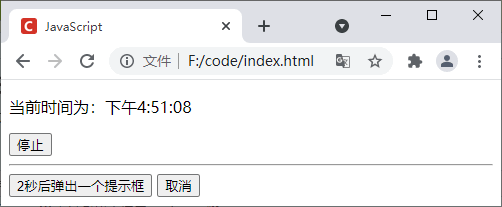

首页 > JavaScript
JS定时器：setTimeout和setInterval
JavaScript 定时器，有时也称为“计时器”，用来在经过指定的时间后执行某些任务，类似于我们生活中的闹钟。
在 JavaScript 中，我们可以利用定时器来延迟执行某些代码，或者以固定的时间间隔重复执行某些代码。例如，您可以使用定时器定时更新页面中的广告或者显示一个实时的时钟等。
JavaScript 中提供了两种方式来设置定时器，分别是 setTimeout() 和 setInterval()，它们之间的区别如下：
JS setTimeout() 函数的语法格式如下：
示例代码如下：
JS setInterval() 函数的语法格式如下：
我们可以借助 clearTimeout() 或 clearInterval() 函数来分别清除由 setTimeout() 或 setInterval() 函数创建的定时器。调用 clearTimeout() 或 clearInterval() 函数需要提供定时器的唯一 ID 作为参数，示例代码如下：
在 JavaScript 中，我们可以利用定时器来延迟执行某些代码，或者以固定的时间间隔重复执行某些代码。例如，您可以使用定时器定时更新页面中的广告或者显示一个实时的时钟等。
JavaScript 中提供了两种方式来设置定时器，分别是 setTimeout() 和 setInterval()，它们之间的区别如下：
| 方法 | 说明 |
|---|---|
| setTimeout() | 在指定的时间后（单位为毫秒），执行某些代码，代码只会执行一次 |
| setInterval() | 按照指定的周期（单位为毫秒）来重复执行某些代码，定时器不会自动停止，除非调用 clearInterval() 函数来手动停止或着关闭浏览器窗口 |
setTimeout()
JS setTimeout() 函数用来在指定时间后执行某些代码，代码仅执行一次。JS setTimeout() 函数的语法格式如下：
setTimeout(function[, delay, arg1, arg2, ...]);
setTimeout(function[, delay]);
setTimeout(code[, delay]);
- function：一个函数（通常使用匿名函数），其中定义了定时器中要执行的代码；
- code：字符串类型的代码，这些代码会在定时器到期后被编译执行，出于安全考虑不建议使用；
- delay：可选参数，定时器在执行的其中代码之前，要等待的时间，单位为毫秒（1秒 = 1000毫秒），如果省略此参数，则表示立即执行；
- arg1、arg2、...、argN：要传递给函数的参数。
示例代码如下：
<!DOCTYPE html>
<html lang="en">
<head>
<meta charset="UTF-8">
<title>JavaScript</title>
</head>
<body>
<script type="text/javascript">
var myFun = function (str = 'JavaScript'){
document.write(str + "<br>");
};
setTimeout(myFun, 500, 'Hello');
setTimeout(myFun, 1000);
setTimeout(function(){
document.write("定时器<br>");
}, 1500)
setTimeout("document.write(\"setTimeout()\")", 2000);
</script>
</body>
</html>
运行上面的代码，会间隔 500 毫秒，依次输出下面的内容：
Hello
JavaScript
定时器
setTimeout()
setInterval()
JS setInterval() 函数可以定义一个能够重复执行的定时器，每次执行需要等待指定的时间间隔。JS setInterval() 函数的语法格式如下：
setInterval(function, delay, [arg1, arg2, ...]);
setInterval(code, delay);
- function：一个函数（通常使用匿名函数），其中定义了定时器中要执行的代码；
- code：字符串类型的代码，这些代码会在定时器到期后被编译执行，出于安全考虑不建议使用；
- delay：可选参数，定时器在执行的其中代码之前，要等待的时间，单位为毫秒（1秒 = 1000毫秒），如果省略此参数，则表示立即执行；
- arg1、arg2、...、argN：要传递给函数的参数。
提示：通过 setInterval() 函数定义的定时器不会自动停止，除非调用 clearInterval() 函数来手动停止或着关闭浏览器窗口。
示例代码如下：
<!DOCTYPE html>
<html lang="en">
<head>
<meta charset="UTF-8">
<title>JavaScript</title>
</head>
<body>
<p id="one"></p>
<p id="two"></p>
<script type="text/javascript">
var num = 1;
var myFun = function (){
document.getElementById('one').innerHTML += num + " ";
num ++;
};
setInterval(myFun, 500);
setInterval(function(){
var d = new Date();
document.getElementById('two').innerHTML = d.toLocaleTimeString();
}, 1000);
</script>
</body>
</html>
运行结果如下：
1 2 3 4 5 6 7 8 9
下午4:01:13
JS 取消定时器
当使用 setTimeout() 或 setInterval() 设置定时器时，这两个方法都会产生一个定时器的唯一 ID，ID 为一个正整数值，也被称为“定时器标识符”，通过这个 ID，我们可以清除 ID 所对应的定时器。我们可以借助 clearTimeout() 或 clearInterval() 函数来分别清除由 setTimeout() 或 setInterval() 函数创建的定时器。调用 clearTimeout() 或 clearInterval() 函数需要提供定时器的唯一 ID 作为参数，示例代码如下：
<!DOCTYPE html>
<html lang="en">
<head>
<meta charset="UTF-8">
<title>JavaScript</title>
</head>
<body>
<p>当前时间为：<span id="clock"></span></p>
<button onclick="stopClock(this);">停止</button><hr>
<button onclick="delayedAlert(this);">2秒后弹出一个提示框</button>
<button onclick="clearAlert();">取消</button>
<script type="text/javascript">
var intervalID;
function showTime() {
var d = new Date();
document.getElementById("clock").innerHTML = d.toLocaleTimeString();
}
function stopClock(e) {
clearInterval(intervalID);
e.setAttribute('disabled', true)
}
intervalID = setInterval(showTime, 1000);
var timeoutID;
var that;
function delayedAlert(e) {
that = e;
timeoutID = setTimeout(showAlert, 2000);
e.setAttribute('disabled', true)
}
function showAlert() {
alert('这是一个提示框。');
that.removeAttribute('disabled');
}
function clearAlert() {
clearTimeout(timeoutID);
that.removeAttribute('disabled');
}
</script>
</body>
</html>
运行结果如下图所示：

图1：取消定时器
图1：取消定时器
关注公众号「站长严长生」，在手机上阅读所有教程，随时随地都能学习。内含一款搜索神器，免费下载全网书籍和视频。

微信扫码关注公众号